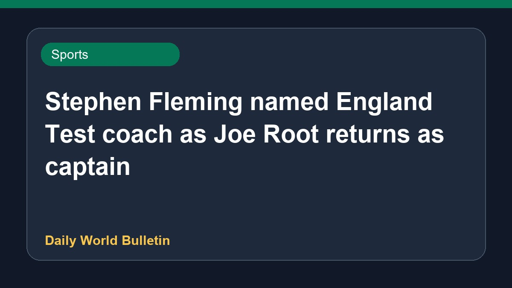

Stephen Fleming named England Test coach as Joe Root returns as captain

The England and Wales Cricket Board has appointed former New Zealand captain Stephen Fleming as the new head coach of the England Men's Test team. Additionally, Joe Root is set to return to the role of Test captain. Fleming, who has built a strong reputation as an Indian Premier League coach, secured the position after impressing the ECB during the selection process. Details regarding their upcoming series schedules and support staff remain limited based on the current reports.
Original source: Sports News Sources
Fleming appointed England's Test head coach; Root returns as captain - Cricbuzz ↗
Fleming appointed England's Test head coach; Root returns as captain - Cricbuzz ↗